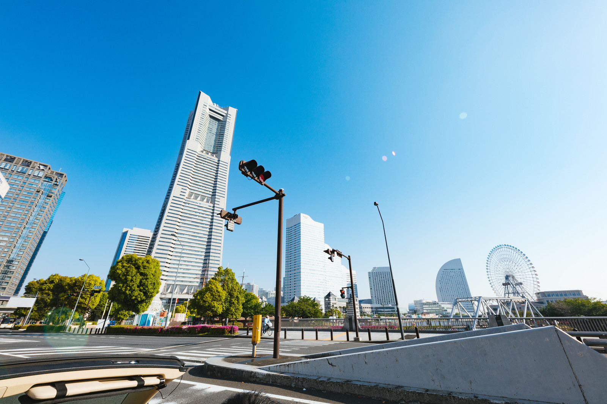
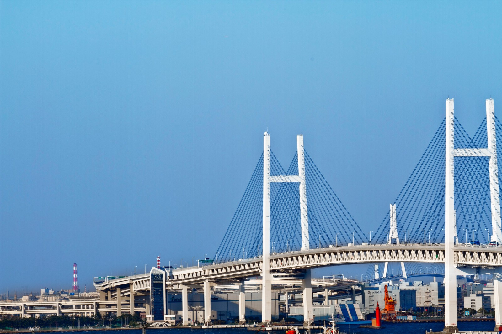
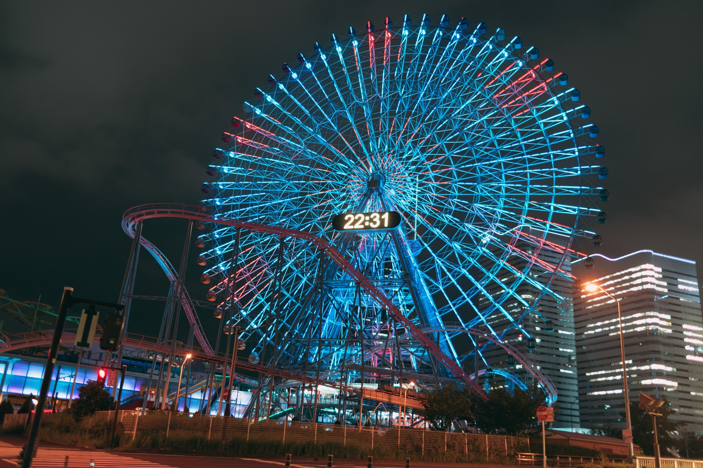
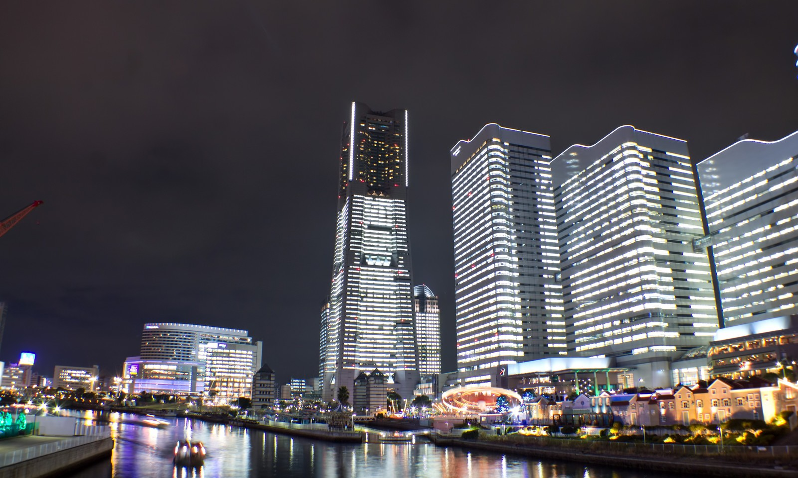

皆さん、こんにちは。「車-DAKE-」のコラムをご覧いただき誠にありがとうございます。 このコラムでは、旅行に関する情報を記事として発信し、皆様にドライブがしたくなる旅行を提案していきます。 旅行には行きたいけど行き先が決まらない・・・、どんな旅行先があるのか分からないので提案して欲しい・・・ そんな方がこちらの記事から行きたい旅行先・車で走りたい場所を見つけていただけたら幸いです。
皆さんはドライブはお好きですか？時間やルートに縛られず、好きなように移動できる車での旅行は自由度が高くて楽しいですよね！ 普段は車に乗らない方も旅行ではハンドルを握りドライブを楽しんだり、仲間とお菓子や飲み物を用意して音楽をかけながら騒いだり、車を使った旅行ならではの良さが好きな方も多いのではないでしょうか？ そして今はコロナ禍で、不特定多数の方と近い距離を保ったまま移動する公共交通機関には少し抵抗があったり、心配な方もいらっしゃると思います。 そんな今だからこそ、車での旅行で安心安全な旅のスタイルをご提案していきます。 今回の旅先は、神奈川県・みなとみらいです。高い高層ビルやホテルが立ち並ぶ都会の側面と、海沿いで心地よい風を感じられる自然の側面がある首都圏でも指折りのドライブスポットです。 東京からであれば、朝早く出発しなくとも昼からのんびり出かけられますし、すぐに帰れる分夜景をじっくり楽しむ時間も取れるでしょう。
行きは横浜ベイブリッジからみなとみらいへ向かうのはいかがでしょうか？東京・川崎方面からであれば少し海沿いに迂回するだけで渋滞を回避できることもあるのでおすすめです。 お昼ころまでは太陽の光が巡行になるので、車内からみなとみらい全体の景色をパノラマで見渡せます。写真はくれぐれも同乗者の方にお願いしてくださいね！笑
夜になると街全体が光に包まれ、イルミネーション期間中でなくとも幻想的な空間となります。 関東屈指の夜景スポットを車で回るのは贅沢以外の何物でもないでしょう。 特に人気があるのはベイサイドエリアにあるコスモワールドの観覧車で、時間に合わせて光り方が変わる様は見とれてしまいます。運良く近くの交差点に信号待ちで停車できればラッキーです！
また、高い建物の間を走り抜けるのも気持ちがよく、昼間とは違った雰囲気を感じられます。 オフィスビルやホテル、商業施設の夜景がこんなにも綺麗に感じられるのは全国でも数少ないと思います。 道沿いを流れる運河の水面に映る夜景も、みなとみらいならでは。車を近くに止めて、散歩してみるのもおすすめです。 周辺には美味しいレストランが沢山ありますのでデートにももってこいで、週末にはカップルの姿が多く見られます。 欠点の付け所のない絶対的おすすめドライブスポットがみなとみらいです！
次回の旅行先に、「みなとみらい」はいかがでしょうか？ レンタカーの料金はリンクからすぐにお調べいただけます。 また、ご自身のお車をお持ちの方はホテルだけを予約するために宿-DAKE-のサイトもぜひ覗いてみてください！ 旅行に関する情報はSNSでも発信しておりますので、是非そちらもご覧ください。 次回のコラムもお楽しみに〜！